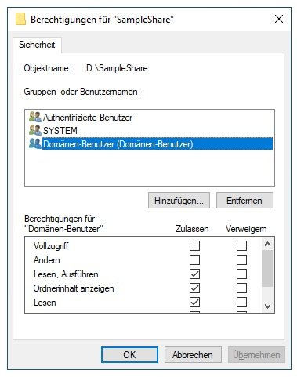
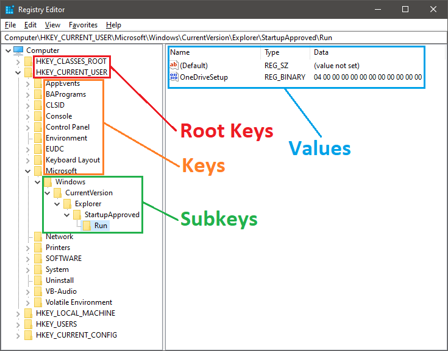

🧩 Computer- & Windows-Grundlagen
Das Startmodul: Wie ist ein Computer aufgebaut, und wie hängen Benutzer-/Systemebene, Berechtigungen, Registry und Dateitypen unter Windows zusammen? Die Basis für alle weiteren Module.
📺 Vertiefung: PC-Komponenten einfach erklärt (IT & Medien einfach erklärt)
Aufbau eines Computers
i
Stell dir den Computer wie eine kleine Werkstatt vor: die CPU ist
der Werker, der die Arbeit erledigt; RAM ist der Arbeitstisch für
Dinge, die er gerade braucht; die Festplatte/SSD ist das Regal, wo
alles dauerhaft lagert, auch wenn die Werkstatt schliesst
(Strom aus).
i
Ein Computer besteht aus mehreren Kernkomponenten, die auf dem Mainboard zusammenarbeiten:
- Prozessor (CPU): verarbeitet Daten und steuert Abläufe - das "Gehirn" des Computers.
- Arbeitsspeicher (RAM): flüchtiges Gedächtnis, speichert aktuell genutzte Daten für schnellen Zugriff.
- Speicherlaufwerke: HDDs speichern magnetisch/mechanisch, moderne SSDs elektronisch (schneller, keine bewegten Teile).
- Mainboard: verbindet CPU, RAM, Grafikkarte usw. physisch miteinander.
- Netzteil, Kühlung, Grafikkarte: sorgen für Strom, Temperaturregulierung und Bildausgabe.
Benutzer- und Systembereich
i
Merkhilfe: "Computer" = gerätebezogen (gilt für jeden, der sich
an DIESEM PC anmeldet). "Benutzer" = personenbezogen (folgt DIESER
Person auf jeden PC, an dem sie sich anmeldet).
i
Windows unterscheidet zwischen Benutzer- und Systemebene. Viele
Einstellungen gelten systemweit, andere nur benutzerspezifisch. Die
Registry spiegelt das direkt: HKEY_LOCAL_MACHINE legt
globale Systemeinstellungen fest, HKEY_CURRENT_USER nur
das Profil des angemeldeten Nutzers.
Auch bei Programminstallationen kann man wählen: "nur für mich" (per-user, landet nur im eigenen Profil) oder "für alle Benutzer" (per-machine, landet im gemeinsamen All-Users-Profil).
Berechtigungen und Benutzerrechte
i
Stell dir NTFS-Berechtigungen wie ein Schlüsselsystem vor: jede
Person bekommt nur die Schlüssel (Lesen/Schreiben/Ändern), die
sie tatsächlich braucht - nicht automatisch den Generalschlüssel.
i
Der Zugriff auf Dateien, Ordner und Systemfunktionen wird durch NTFS-Dateiberechtigungen kontrolliert: für jeden Benutzer oder jede Gruppe wird festgelegt, ob Lesen, Schreiben, Ausführen oder Ändern erlaubt ist. Standardmässig haben normale Benutzer eingeschränkte Rechte, Administratoren dürfen mehr - müssen aber dank UAC (User Account Control) kritische Änderungen extra bestätigen.

Auch hier gilt die Deny-Vorrang-Regel: wäre bei "Verweigern" für "Lesen" ein Häkchen gesetzt, würde das die erlaubende Einstellung darüber in der Liste komplett aushebeln - unabhängig davon, was bei "Vollzugriff" steht.
Windows-Registry
i
Vergleich mit einem Aktenschrank: die 5 Hauptbäume (Hives) sind die
grossen Schubladen, Schlüssel und Unterschlüssel sind Ordner und
Unterordner darin, und die Werte sind die einzelnen Blätter Papier
mit den eigentlichen Informationen.
i
Die Registry ist die zentrale Konfigurationsdatenbank von Windows -
hierarchisch aufgebaut in fünf Hauptbäumen (Hives), darunter
HKLM (systemweit) und HKCU
(benutzerspezifisch). Sie speichert Systemeinstellungen,
Treiberinformationen, installierte Software und Benutzerprofile.

In diesem Beispiel sorgt der Wert OneDriveSetup
im Schlüssel ...\Run dafür, dass OneDrive bei
jeder Benutzeranmeldung automatisch gestartet wird - ein klassischer
Autostart-Eintrag.
Vor grösseren Änderungen (z.B. per Skript) empfiehlt sich immer eine Sicherung - ein fehlerhafter Eintrag kann das System unbrauchbar machen.
Dateisystem und Dateitypen
i
Die Dateiendung ist wie ein Etikett auf einer Kiste: Windows öffnet
sie nicht, um zu wissen was drin ist, sondern verlässt sich einfach
auf das Etikett (.exe, .docx, ...), um zu
entscheiden, welches Programm die Datei behandeln soll.
i
.exe, .docx, ...), um zu
entscheiden, welches Programm die Datei behandeln soll.
Windows nutzt meist NTFS als Dateisystem. Die Dateiendung (Extension) sagt Windows dabei, wie eine Datei zu behandeln ist - unabhängig vom eigentlichen Dateinamen. Die gängigsten Endungen im IT-Alltag:
| Endung | Typ | Bedeutung | Beispiel |
|---|---|---|---|
| .exe | Ausführbare Datei | Eigenständiges Programm, wird direkt gestartet |
i
Binärdatei - kein lesbarer Text. Öffnet man sie trotzdem in
einem Texteditor, sieht man grösstenteils kryptische Zeichen,
aber ganz am Anfang stehen immer die zwei lesbaren Buchstaben
"MZ" (Kennung des DOS-EXE-Headers):
MZ......@....... ........!..L.! This program cannot be run in DOS mode. |
| .msi | Installationspaket | Installiert/deinstalliert Software über den Windows Installer (siehe Modul Paketierung) |
i
Auch binär - technisch eine strukturierte Speicherdatei (OLE
Compound Storage), keine ZIP und kein Klartext. Intern aber
wie eine kleine Datenbank aus Tabellen (Datei-, Komponenten-,
Registry-Tabelle usw.) organisiert - genau die Tabellen, die
im Modul Paketierung im Editor Orca zu sehen sind.
|
| .dll | Bibliothek (Dynamic Link Library) | Enthält Programmcode/Funktionen, die sich mehrere Programme teilen - kein eigenständig startbares Programm |
i
Technisch fast identisch zu einer EXE - gleiches Dateiformat,
gleicher "MZ"-Header am Anfang. Der Unterschied steckt nur in
einem internen Flag: "kann nicht alleine gestartet werden,
nur von anderen Programmen bei Bedarf nachgeladen werden".
|
| .bat / .cmd | Batch-Skript | Einfache Befehlsfolge für die Eingabeaufforderung (CMD) |
i
Reiner Text, Zeile für Zeile wie manuell in CMD eingetippt:
@echo off echo Kopiere Config... copy "\\srv\share\app.cfg" "C:\App\" if %errorlevel% neq 0 ( echo Fehler! exit /b 1 ) echo Fertig. |
| .ps1 | PowerShell-Skript | Skript für die PowerShell - deutlich mächtiger als Batch (siehe Modul Skripting) |
i
Ebenfalls reiner Text, aber mit echten Objekten/Cmdlets statt
einzelner Befehlszeilen:
param(
[string]$Pfad = "C:\Logs"
)
Get-ChildItem $Pfad -Filter *.log |
Where-Object {
$_.LastWriteTime -lt (Get-Date).AddDays(-30)
} |
Remove-Item -Force
|
| .vbs | VBScript | Älteres Skriptformat, u.a. für Logon-Skripte - heute meist durch PowerShell ersetzt |
i
Reiner Text in VBScript-Syntax:
Set objShell = _
CreateObject("WScript.Shell")
objShell.Run "notepad.exe"
WScript.Echo "Gestartet"
|
| .ini | Konfigurationsdatei | Einstellungen im Klartext-Format, gegliedert in Abschnitte mit Schlüssel=Wert-Paaren |
i
Reiner Text mit Abschnitten in eckigen Klammern:
[General] Version=3.2.1 Language=de-DE [Server] Host=192.168.1.10 Port=8443 UseSSL=true |
| .cfg / .xml / .json | Konfiguration/Daten | Weitere gängige Formate für Einstellungen oder strukturierte Daten |
i
Je nach Programm entweder simpel wie .ini, oder strukturiert
mit Verschachtelung:
<settings>
<server host="10.0.0.5"
port="443"/>
</settings>
{ "server": {
"host": "10.0.0.5",
"port": 443 } }
|
| .reg | Registry-Datei | Import-/Exportformat für Registry-Einträge (siehe Windows-Registry oben) |
i
Reiner Text mit fester Kopfzeile, danach Schlüsselpfad und
Werte:
Windows Registry Editor Version 5.00 [HKEY_CURRENT_USER\Software\ Firma\App] "AutoStart"=dword:00000001 "Pfad"="C:\\Program Files\\App" |
| .inf | Setup-Informationsdatei | Beschreibt z.B., wie ein Treiber installiert werden soll |
i
Reiner Text, ähnlich einer INI, aber mit festgelegten
Abschnittsnamen, die der Windows-Setup-Prozess versteht:
[Version] Signature="$WINDOWS NT$" Class=Printer [Manufacturer] %Hersteller%=Modelle [Modelle] %Drucker%=Treiberinstall |
| .log | Protokolldatei | Textbasierte Aufzeichnung von Ereignissen, z.B. Installationsprotokolle |
i
Reiner Text, meist eine Zeile pro Ereignis mit Zeitstempel:
09:12:03 INFO Setup gestartet
09:12:05 INFO Datei kopiert:
app.exe
09:12:07 ERROR Zugriff verweigert:
config.ini
|
| .txt | Reiner Text | Unformatierter Text ohne Schriftformatierung |
i
Genau das, was drinsteht - ohne jede Formatierung, Schriftart
oder Struktur:
Einkaufsliste: - Netzwerkkabel - USB-Stick - Ersatzmaus |
| .docx | Word-Dokument | Formatiertes Textdokument (Microsoft Word) |
i
Auch binär auf den ersten Blick - technisch aber ein ZIP-Archiv
voller XML-Dateien. Benennt man sie in .zip um, lässt sie sich
entpacken. Der eigentliche Text steckt z.B. in
word/document.xml:
<w:p>
<w:r>
<w:t>Hallo Welt</w:t>
</w:r>
</w:p>
|
| .zip | Archiv | Komprimiert mehrere Dateien platzsparend in eine einzige Datei |
i
Binär, aber mit klarer Struktur: die komprimierten Dateien
hintereinander, plus ein "Inhaltsverzeichnis" (Central
Directory) am Ende der Datei, das sagt, wo jede einzelne
Datei beginnt und wie sie heisst.
|